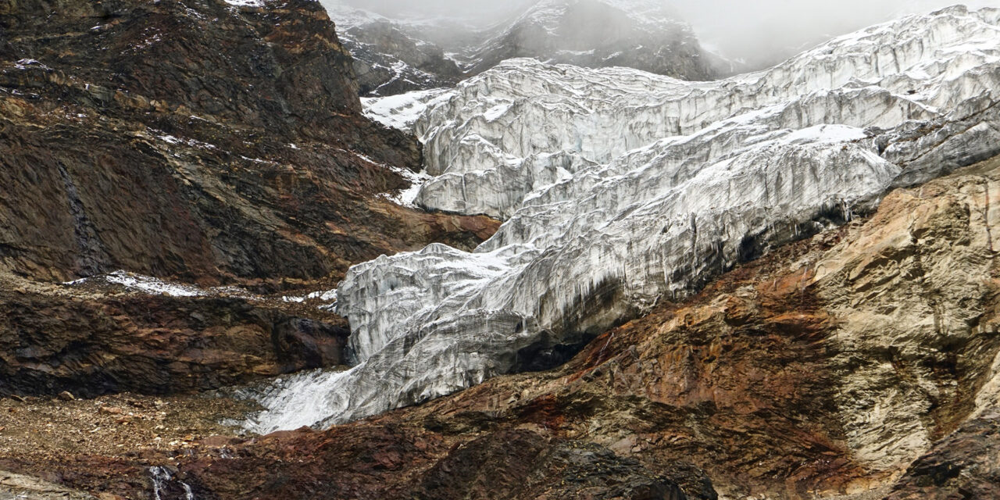
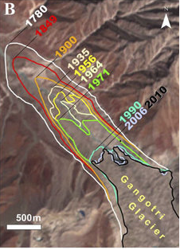
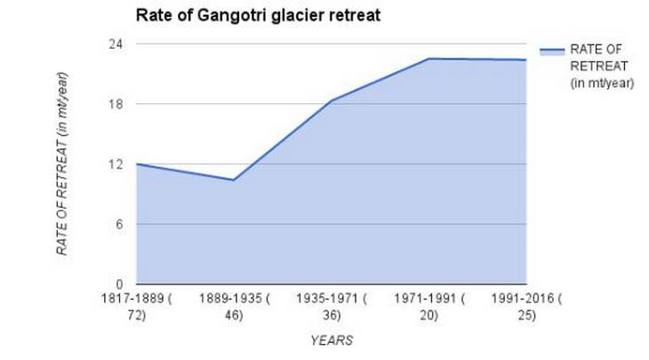

'Gangotri Glacier retreated by 3 km in two centuries'

After a four-hour-long trek from Bhojwasa, the final camping spot in Gangotri, when a brown, fractured pile of rocks finally came into view it was hard to believe that this was the mouth of the glacier from which the "holy" Ganga emerged.
Gaumukh, the snout of the Gangotri glacier, named after its shape like the mouth of a cow, has retreated by over three kilometres since 1817.
With 10 Indian States reeling under drought and the country facing a severe water crisis after two weak monsoons, the story of retreating freshwater sources such as the Himalayan glaciers is worrying. And though a three-kilometre retreat over a period of two centuries might seem insignificant at first glance, data shows that the rate of retreat has increased sharply since 1971. The rate of retreat is 22 metres per year.
The following demographs demonstrates the retreat of the Gangotri Glacier:
 
Less Ice Formation
The retreat points to lesser ice formation each year than its current rate of melting, a process that is continuing, say scientists at the National Institute of Hydrology, Roorkee. Winter precipitation is when the glacier receives adequate snow and ice for maintaining itself. About 10-15 spells of winter snow as part of western disturbances feed the glacier. But last year Gangotri received very little snowfall. We have also observed more rainfall and a slight temperature rise in the region, both of which transfer heat on to the glacier, warming it,Professor Manohar Arora, scientist at NIH explained.In summer, the melting of the glacier feeds the Bhagirathi River, the source stream of the Ganga. A week ago, when this correspondent scaled 4,255 metres to reach the glacier, the day time temperature was about 15 degree Celsius, and the Bhagirathi was swollen with water. However, dwindling snowfall levels have also affected the volume of water discharged during summer into the river, compared to peak levels.
Small lakes have formed on top of the glacier, as you go beyond Gaumukh towards Tapovan,eminent conservationist, and mountaineer Harshwanti Bisht, who won the Edmund Hillary Mountain Legacy Medal in 2013, told The Hindu.It was the blast of one such glacial lake in Chorabari that led to the June 2013 flood disaster in Kedarnath, she said worriedly, adding, If such fast pace of melting continued here as well, such disasters cannot be ruled out.
Caving In
Earlier the Gangotri glacier appeared as a convex shape structure from atop Tapovan, the meadow at the base of Shivling peak beyond Gaumukh, but now the glacier appears to be caving in and is concave in shape.In 1977, when I used to go for mountaineering training, hardly two or three cars could be spotted in Gangotri. But now there are hundreds and thousands of cars and buses plying pilgrims and tourists to these places during the summer months, Ms. Bisht said.
The Bhoj (birch tree) forests have disappeared in the region, and though we are planting new trees now, their growth is very slow, she said. Since 1992, Ms. Bisht has been running a tree conservation programme Save Gangotri to help address the ecological crisis.
But the process of global warming and climate change could well be part of a normal natural cycle, Professor Milap Chand Sharma pointed out. Reversing the process of retreat is impossible, according to him. Stop people from visiting glaciers... you think this can happen... that too in India? Prof. Sharma asked. Or else, increase solid precipitation during accumulation season... Can anyone do it? Otherwise put a tarpaulin cover over the Himalayas during ablation period..., he said.
In the end, if expert opinion is to be believed, the climate change phenomenon of melting the glaciers could well be irreversible.
Original Credits: Article from THE HINDU Dated : March 4, 2017
 by Ananay Gupta © All Rights Reserved 2021
by Ananay Gupta © All Rights Reserved 2021